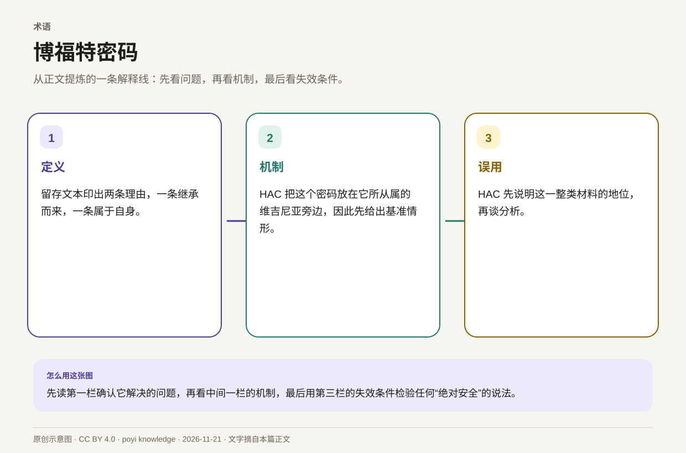

原理与机制
术语：博福特密码（Beaufort Cipher）。HAC 把这个密码放在它所从属的维吉尼亚旁边，因此先给出基准情形。定义 7.53（hac-ch7-cast.txt:541）说：周期 t、字母表含 s 个字符的简单维吉尼亚密码有一个 t 字符密钥，并以 「is defined on individual characters by ci = mi + ki mod s, where subscript i in ki is taken modulo t (the key is re-used).」（按单字符定义为 ci = mi + ki mod s，其中 ki 的下标 i 对 t 取模（密钥循环复用）） 收尾。例 7.54（hac-ch7-cast.txt:543）在一句之内印出两种减法：「the Beaufort cipher has ci = ki - mi mod s, and is its own inverse.」（博福特密码为 ci = ki - mi mod s，且它自身的逆就是它本身），又为区分另一个方向写道 「The variant Beaufort has encryption mapping ci = mi - ki mod s.」（变体博福特的加密映射为 ci = mi - ki mod s）。这就是这份材料给出的全部机制：博福特密码是模字母表长度用密钥字符减去明文字符，本章在同一小句里就把这一后果连着写了出来，因此同一个运算既加密又解密；变体博福特是反方向的减法，而本章只把自身之逆这句结论写给前一个映射，没有写给第二个。两者是不同的映射，HAC 也分别命名。该例的小标题里维吉尼亚的名字带重音字母，本抽取件把它印成以反引号收尾的 Latin-1 序列，因此标题只按行号引用，不作逐字引用。

为什么重要
留存文本印出两条理由，一条继承而来，一条属于自身。继承的那条是多表化的理由：第 7.3.3 节解释，对明文不同部分使用不同替换映射，就意味着 「the same plaintext character is thus encrypted to different ciphertext characters,」（同一个明文字符因此会被加密成不同的密文字符），从而 「precluding simple frequency analysis as per mono-alphabetic substitution (§7.3.5).」（从而排除了单表代替那种简单的频率分析（见 §7.3.5））（hac-ch7.txt:1060-1061）。作为维吉尼亚家族的一个变体，博福特密码被提出的理由就是这个家族存在的理由；本章把这条理由一次性写给整个家族，而不是给每个成员各写一遍。属于自身的那条理由是减法方向。例 7.54 的映射在同一小句里连着它的后果印出，「the Beaufort cipher has ci = ki - mi mod s, and is its own inverse.」（博福特密码为 ci = ki - mi mod s，且它自身的逆就是它本身）（hac-ch7.txt:1078），而注 7.66 正是把这一性质当作该密码出现在机器里的原因：Hagelin M-209 实现的是 「a self-decrypting Beaufort cipher」（一个自解密（加解密同法）的博福特密码）（hac-ch7.txt:1288）。运算自逆意味着同一套密钥轮、同一条线路就能双向完成加解密，本章写下的自解密一词指的就是这件事。
应用与实例
这份材料记录的唯一一个部署是一台转子机。注 7.66 以 「The Hagelin M-209 rotor machine implements a polyalphabetic substitution using 6 keywheels」（Hagelin M-209 转子机用 6 个密钥轮实现一个多表代替） 开头，接着更具体地说它实现的是 「a self-decrypting Beaufort cipher (Example 7.54)」（一个自解密的博福特密码（例 7.54））（hac-ch7-cast.txt:651）；那里的引用指向例 7.54，也就是上文引用的那条映射，于是机器与教科书里的减法由本章自己接了起来。同一条注给出机器的周期为 「of period 101 405 850 = 26·25·23·21·19·17 letters」（周期为 101 405 850 个字母，即 26·25·23·21·19·17）（hac-ch7-cast.txt:651）——这里的连乘以中点写出，在本抽取件中保住了字形；但紧接着那句说周期超过某个十的幂的上标没有保住，所以那个量级只做转述。M-209 的来历印在 hac-ch7-cast.txt:649 的 Hagelin 型号综述里：注中说生产逾 14 万台的 C-48，「which was called M-209 when used by the U.S.Army as a World War II field cipher」（在美国陆军作为二战野战密码机使用时被命名为 M-209）。这三份留存件里没有其它关于博福特映射部署的记录，该条目也不作此类断言。
边界与攻击面
HAC 先说明这一整类材料的地位，再谈分析。第 7.3 节说这些内容 「They illustrate important basic principles and common pitfalls.」（它们说明重要的基本原理与常见陷阱）（hac-ch7.txt:856），随后给出不把它们留作实际使用的理由：「since these techniques are neither sophisticated nor secure against current cryptanalytic capabilities, they are not generally suitable for practical use.」（由于这些技术既不精妙，也不足以抵御当前的密码分析能力，它们通常并不适合实际使用）（hac-ch7.txt:857-858）。分析路径是按整个家族而非单独按博福特命名的：「Cryptanalysis of polyalphabetic ciphers is possible by various methods, including Kasiski's method and methods based on the index of coincidence, as discussed below.」（多表密码可以用多种方法分析，包括卡西斯基方法与基于重合并指数的方法，详见下文）（hac-ch7.txt:1470-1471）。两份第 7 章抽取件都没有给出任何依赖减法朝向这一事实的攻击步骤；印出来的是重复关键词多表代替共用的周期恢复机制。本章确实给一个博福特实现附了数字，但那属于机器：注 7.66 记下 「a known-plaintext attack is possible with 50-100 characters.」（在 50-100 个字符的条件下已知明文攻击即可奏效）（hac-ch7.txt:1297-1298；这条引用按这份折行抽取件在换行处留下的间距照原样带上，因为 50-100 正好起于续行）。同一句里排在它前面的纯密文攻击数据量没有被引用，因为在这份抽取件里那个区间的连接号正好落在换行处，闭合折行时就被抹掉，两个数字连成一串（hac-ch7.txt:1295-1296）；此处只用自己的话给出这个区间，读者可以在这些行上看到损坏后的印法。据此，边界就是这个家族的边界——周期恢复加上语言冗余——以及它的某个实现只需几十个已知字符即可被推算。
历史与背景
留存件能定年的是文献，不是密码本身。HAC 第 1 章的注释与进一步参考一节在 hac1.txt:1636 印出 「Symmetric-key encryption has a very long history, as recorded by Kahn [648].」（对称密钥加密有很长的历史，Kahn 的著作对此有记载）；「Most systems invented prior to the 1970s are now of historical interest only.」（1970 年代以前发明的多数系统如今只有历史意义）；同一条注释接着把 「Beaufort ciphers, rotor machines (Enigma and Hagelin), running key ciphers, and so on」（博福特密码、转子机（Enigma 与 Hagelin）、运行密钥密码等） 列为 Denning 第 2 章所擅长的知名方案——博福特这个名字在本章就出现在这句话里，而该行起始的节号字形已损坏，所以引用从它之后开始。那条注释与第 7 章的例子都没有给出博福特密码的发明者、国籍或年代，这三个文件里也没有任何一行提供，因此该条目不写起源故事；这类归属属于本目录的其他行。可以确定的是文献自身：hac1.txt:1 印着 「This is a Chapter from the Handbook of Applied Cryptography, by A.Menezes, P.van Oorschot, and S.Vanstone, CRC Press, 1996.」（本件取自应用密码学手册（Handbook of Applied Cryptography）的一章，作者 A.Menezes、P.van Oorschot、S.Vanstone，CRC Press，1996 年），而在本章反复出现的版权页脚（hac1.txt:6）写作 1997 年，且版权符号被抽成了裸字母 c。两行并不一致，所以两处都按行号引用，也不把它们合并成一个统一的日期：第二行的首字形没有存活，替它修补就等于歪曲被引用的那份对象。
逐步示例与核验
定义检查模型
上位概念 → 区别特征 → 正例 → 反例 → 易混边界。正例必须落在外延内；反例必须刚好跨过边界；同义词不能代替定义。
参考出处
- Wikipedia search entry for 博福特密码. https://zh.wikipedia.org/w/index.php?search=%E5%8D%9A%E7%A6%8F%E7%89%B9%E5%AF%86%E7%A0%81
- RFC 4949: Internet Security Glossary, Version 2. https://www.rfc-editor.org/rfc/rfc4949